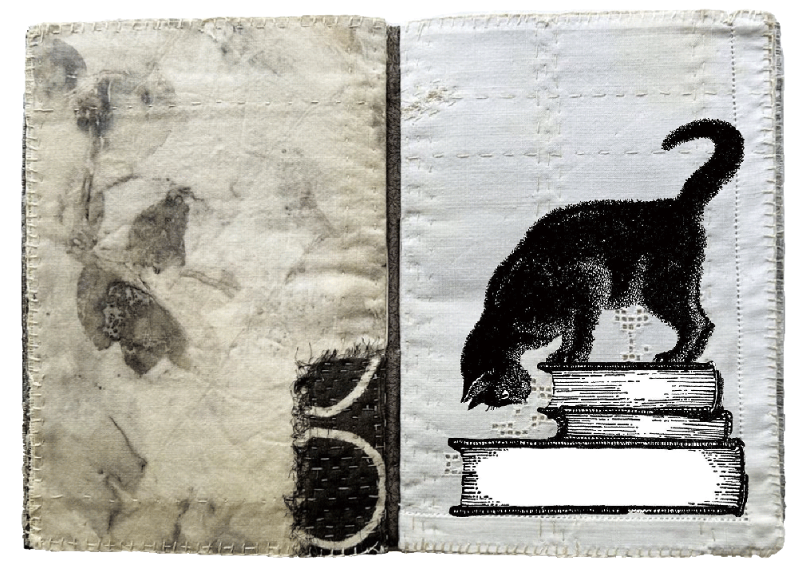
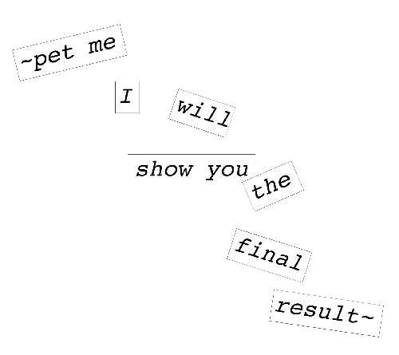
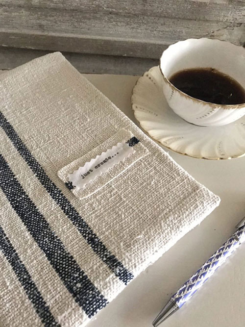
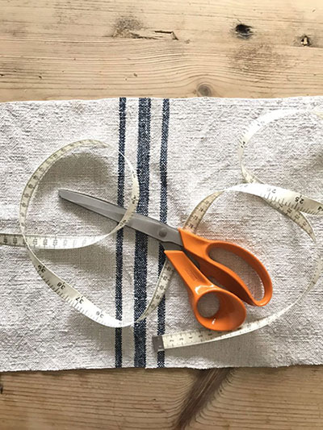
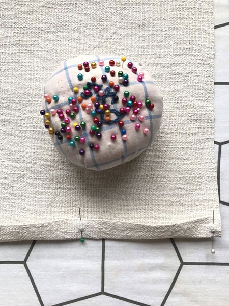
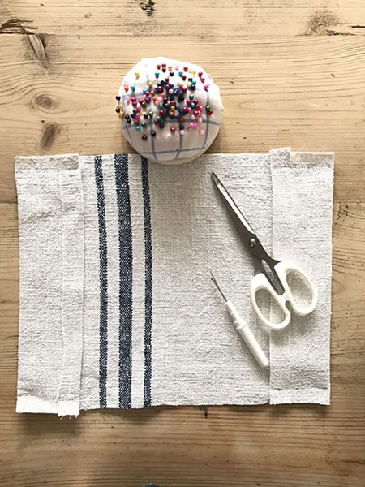
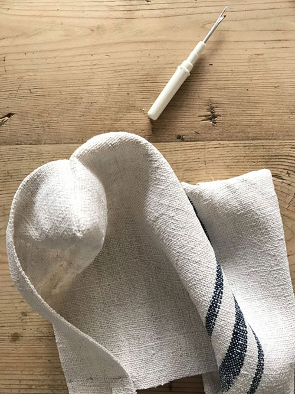
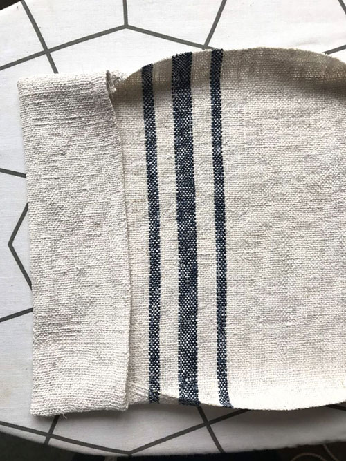
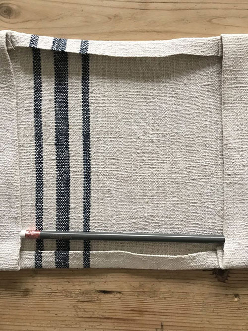

Let's bring this digital journey to real life -- in your paws🐾
"With correct measurements, this method works for any book!^ω^"

* things you will need:
a piece of fabric
a new note book
a scissor
a needle
a ruler
an iron(*optional)
thread
pins/clips
decoration(*optional)


🐾STEP 1: Cutting the fabric
1. Measure the book when open.
2. Add 2cm seam allowance on all sides.
3. On the longest side of the fabric, add an extra 12cm(6cm for each pocket).

🐾STEP 2: Prepare the short edges
1. Fold the short edges inward along the seam allowance.
2. Pin in place -> press flat with an iron -> remove pins -> stitch.

🐾STEP 3: Form the pockets
1. Fold the entire fabric in half with the right sides together (like a book cover inside out).
2. Fold 6 cm at each end to create two pockets.
3. Stitch the top and bottom of each pocket only.

🐾STEP 4: Turn right side out and press
1. Flip the fabric so the pockets are now right side out.
2. Iron the pockets flat.

🐾STEP 5: Finish the long edges between the pockets
1. Fold the seam allowance of the long edges inward -> press -> stitch in place.


🐾STEP 6: Shape the cover
1. Press the entire book cover with an iron to make it neat.
*2. Optional: add decorative elements or messages on the cover.